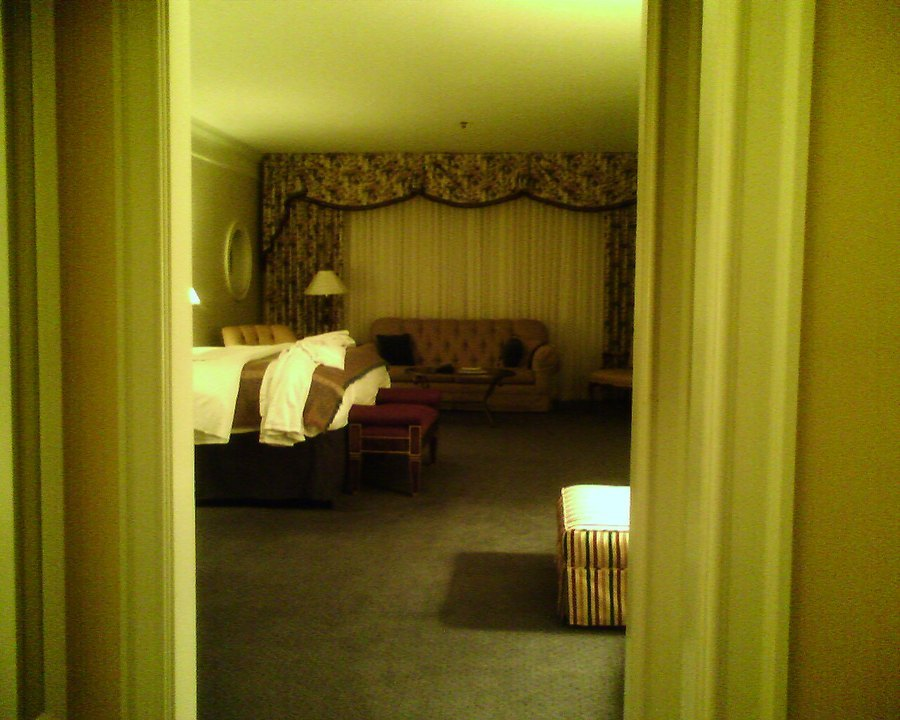

Naps and Nighttime Sleep Quality: Do They Cancel Each Other Out?
A nap can feel like free rest. Whether it actually is depends on when you take it, how long it runs, and how often you reach for one.

Key takeaways
- Timing matters more than the nap itself. Early-afternoon naps rarely touch nighttime sleep; naps after about 6 p.m. more often do.
- Length matters almost as much. A 10-minute nap tends to refresh without the grogginess longer naps cause.
- Frequency adds up. Napping more than three times a week, or longer than two hours total, tracks with worse nighttime sleep quality.
- Naps don't repay sleep debt. They blunt next-day sleepiness, but they don't substitute for consistent nighttime sleep.
- Who you are matters. Shift workers and people running a nighttime sleep deficit tend to gain the most with the least downside.
A short, early nap usually leaves nighttime sleep alone. A long, late, or frequent nap is far more likely to eat into it, by easing off the sleep pressure your body needs at bedtime and by nudging your internal clock later. The size of the trade-off comes down to three things: when you nap, how long you nap, and how often.
What exactly counts as a nap?
Researchers usually define a nap as any sleep period outside the main nighttime sleep episode, lasting anywhere from a few minutes to a couple of hours. That's a wide net. A 10-minute doze in a parked car, a 90-minute afternoon crash on the couch, and a planned half-hour rest before a night shift all get studied under the same umbrella term, which is part of why "is napping good or bad" doesn't have one clean answer.
What tends to separate a harmless nap from a costly one isn't whether you napped. It's the combination of clock time, duration and how regularly you do it, which is exactly what the research below tries to pull apart.
Does napping steal sleep you'd otherwise get at night?
Sleep works on a pressure system. The longer you're awake, the stronger your body's drive to sleep, called homeostatic sleep pressure, builds until it's strong enough to pull you into deep nighttime sleep. A nap releases some of that pressure early. A short nap releases a small, usually harmless amount. A long nap, especially one that reaches deep slow-wave sleep, can let off enough pressure that falling asleep at your normal bedtime takes longer, or that the sleep you do get is lighter and more broken up.
That's the mechanism. Whether it plays out that way for you depends heavily on the three variables below.
What does the actual research say about nap timing?
A 2022 study in the Journal of Sleep Research tracked 62 healthy young adults with wrist actigraphy over several weeks, scoring how fragmented their nighttime sleep was on nights they'd napped. Naps taken late in the day, closer to the night's sleep period, were linked to more fragmented, lower-quality nighttime sleep than naps taken earlier. Frequent nappers also showed more fragmentation than people who napped occasionally or not at all (Mograss et al., 2022).
A separate 2015 survey of 440 college students, published in the Journal of American College Health, found something similar from a different angle. Using the Pittsburgh Sleep Quality Index, students who napped between 6 and 9 p.m. reported shorter nighttime sleep on school nights than students who napped earlier in the day (Ye et al., 2015). Neither study can prove the late nap caused the worse sleep on its own, since both are observational, but the direction lines up with how sleep pressure works mechanically.
How long should a nap be to avoid sleep inertia?
A classic 2006 study in the journal Sleep tested this directly. Participants slept only about 5 hours overnight, then napped at 3 p.m. for 0, 5, 10, 20 or 30 minutes before three hours of testing. The 30-minute nap caused a short stretch of grogginess and worse performance right after waking, a textbook case of sleep inertia, though its benefits ran longest once that wore off. Across the full test window, the 10-minute nap came out as the most consistently useful length, with next to none of the post-nap fog (Brooks & Lack, 2006).
The practical read: short naps, under about 20 minutes, mostly keep you in lighter sleep stages, so you wake up closer to alert. Cross past 20 to 30 minutes and you risk waking mid-cycle, groggy, with less to show for the extra time.
| Nap length | Typical effect | Risk to nighttime sleep |
|---|---|---|
| 5–10 minutes | Quick alertness bump, little to no grogginess | Very low |
| 20 minutes | Noticeable refresh, mild grogginess possible | Low, if before mid-afternoon |
| 30 minutes | Short sleep-inertia dip, then a longer-lasting benefit | Moderate, more so later in the day |
| 60–120 minutes | Reaches deeper sleep stages; can feel very restorative | Higher, especially after mid-afternoon |
Does how often you nap matter more than any single nap?
The college-student survey above found that students who napped more than three times a week, or for more than two hours total across the week, reported the poorest sleep quality of anyone in the sample. That's a frequency-and-dose effect layered on top of timing: an occasional 20-minute nap is a different habit than a near-daily hour-long one, even if any single instance looks harmless (Ye et al., 2015).
If you nap most days and also sleep poorly at night, it's worth asking which is cause and which is effect. Often it's both, feeding each other: poor nighttime sleep drives the urge to nap, and the nap then nibbles at the next night's sleep pressure.
Does a nap help memory the way nighttime sleep does?
To a degree, yes, though it's a smaller effect than a full night. Sleep, including some nap sleep, helps the brain consolidate what you learned that day into longer-term memory. A short-to-moderate nap can measurably sharpen recall and attention for the rest of the afternoon. It isn't a substitute for the deeper consolidation that happens across a full night's sleep cycles, which is also where most of the research behind our guide on how to improve your memory is grounded. Think of a nap as a top-up, not the main event.
Who actually gains the most from napping?
Shift workers, new parents, and anyone running a genuine nighttime sleep deficit tend to see the clearest benefit with the least downside, because they're napping to offset real sleep debt rather than adding rest on top of an already-full tank. Older adults also nap more often on average, partly because nighttime sleep naturally gets lighter and more fragmented with age; a short, early nap can reasonably fill that gap.
People who already sleep well at night and nap anyway, out of habit or boredom rather than need, are the group most likely to feel a nap nibble at their evening sleepiness.
Who should probably skip the nap, or rethink it?
If you struggle to fall asleep at night, wake frequently, or already carry a diagnosis of insomnia, an afternoon or evening nap is one of the more fixable contributors worth cutting first. The same goes if you notice a pattern: nap today, feel wired-but-tired at 11 p.m., then nap again tomorrow to cope. That loop is worth breaking at the nap end, not the bedtime end. Our sleep hygiene checklist covers other habits worth auditing alongside it.
What's a reasonable nap routine, if you want one?
Keep it short, roughly 10 to 20 minutes. Keep it early, ideally before 3 p.m. and well clear of your bedtime. Keep it occasional rather than a daily crutch, unless you're deliberately using naps to cover a known sleep deficit, such as shift work. If you find yourself wide awake at 1 a.m. after dozing off at your desk, see our piece on why you wake up tired after 8 hours for other causes worth ruling out, since nap timing is only one of several variables that shape how you feel the next morning.
A dark, quiet, reasonably cool room helps naps the same way it helps nighttime sleep. Our guide to the best bedroom temperature for sleep applies just as well to a 20-minute afternoon rest.
When should you see a doctor instead of relying on naps?
Talk to a doctor if you need a nap most days just to function, if you fall asleep suddenly or inappropriately during the day, or if loud snoring, gasping, or breathing pauses have been noticed at night. Excessive daytime sleepiness despite a full night in bed can point to something a nap won't fix, including untreated sleep apnea. A nap that feels mandatory rather than optional is a signal worth mentioning at your next visit, not something to just build your schedule around.
Frequently asked questions
Does a 20-minute nap affect nighttime sleep?
Usually not much, if it's taken in the early-to-mid afternoon. Twenty minutes isn't long enough to drain the sleep drive you need for nighttime sleep onset. Push that same nap to early evening and the picture changes.
Is it bad to nap every day?
Not inherently. The research links frequent, long or late napping to worse sleep quality, not daily short naps on their own. A consistent short nap at a consistent early time is a very different habit than an unplanned two-hour collapse on the couch.
Why do I sleep worse at night after a long nap?
A long nap burns off some of the homeostatic sleep pressure that's supposed to carry you into nighttime sleep. By bedtime you have less of that pressure left, so falling asleep and staying asleep both get harder.
Can napping make up for a bad night's sleep?
A short nap can offset some of the next-day sleepiness and sluggish thinking from one rough night. It's a patch, not a replacement. Repeated short nights plus naps still add up to a sleep debt a nap can't fully repay.
What's the best time of day to nap?
Early-to-mid afternoon, roughly 1 to 3 p.m. for most schedules, lines up with a natural dip in alertness and sits far enough from bedtime that it rarely competes with nighttime sleep.
Do older adults need naps more than younger adults?
Older adults nap more often, partly because nighttime sleep tends to get lighter and more fragmented with age. A short nap can help, but a long or very late one is more likely to push nighttime sleep later still.
Does caffeine before a nap help or hurt nighttime sleep?
A "coffee nap", a quick cup right before a short nap timed for the caffeine to kick in as you wake, doesn't appear to carry the same nighttime risk as a long, late nap, because the nap itself stays brief. Skip caffeine within about six hours of bedtime regardless.
Is it normal to feel groggy after waking from a nap?
Yes, especially after naps past the 20-to-30-minute mark, when you're more likely to wake out of deeper sleep. That groggy stretch, known as sleep inertia, usually clears within 15 to 30 minutes.
- Mograss M et al. The effects of napping on night-time sleep in healthy young adults. J Sleep Res. 2022.
- Ye L et al. Napping in college students and its relationship with nighttime sleep. J Am Coll Health. 2015.
- Brooks A, Lack L. A brief afternoon nap following nocturnal sleep restriction: which nap duration is most recuperative? Sleep. 2006.
- Harvard Health: Should I take afternoon naps?
Related: Sleep hygiene checklist · Blue light glasses and sleep: does the evidence hold up? · Why you wake up tired after 8 hours · Is 6 hours of sleep enough?
Image: Liz Lawley from Rochester, NY / Wikimedia Commons / CC BY-SA 2.0